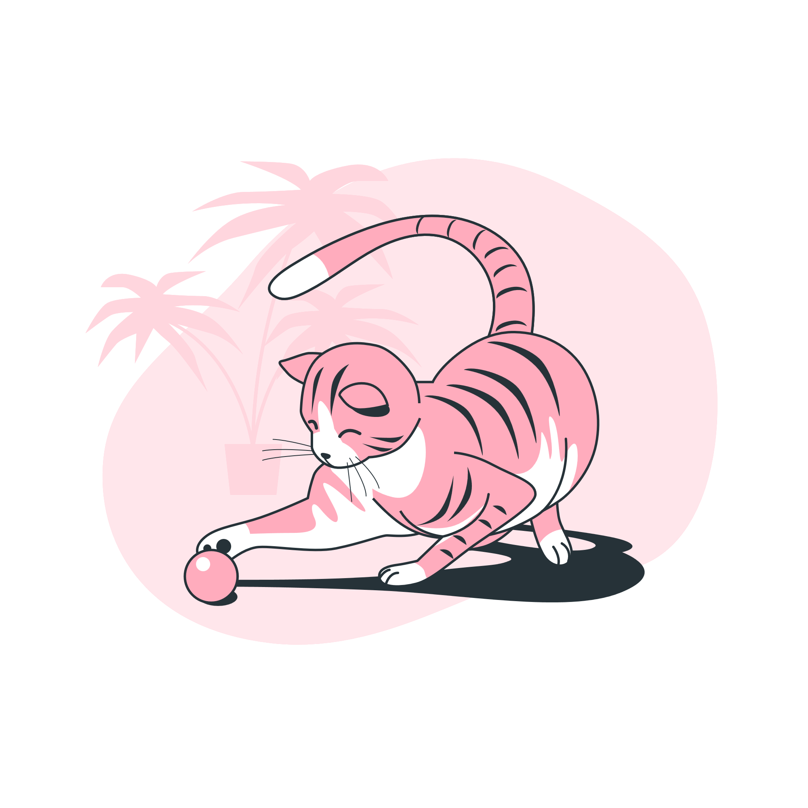
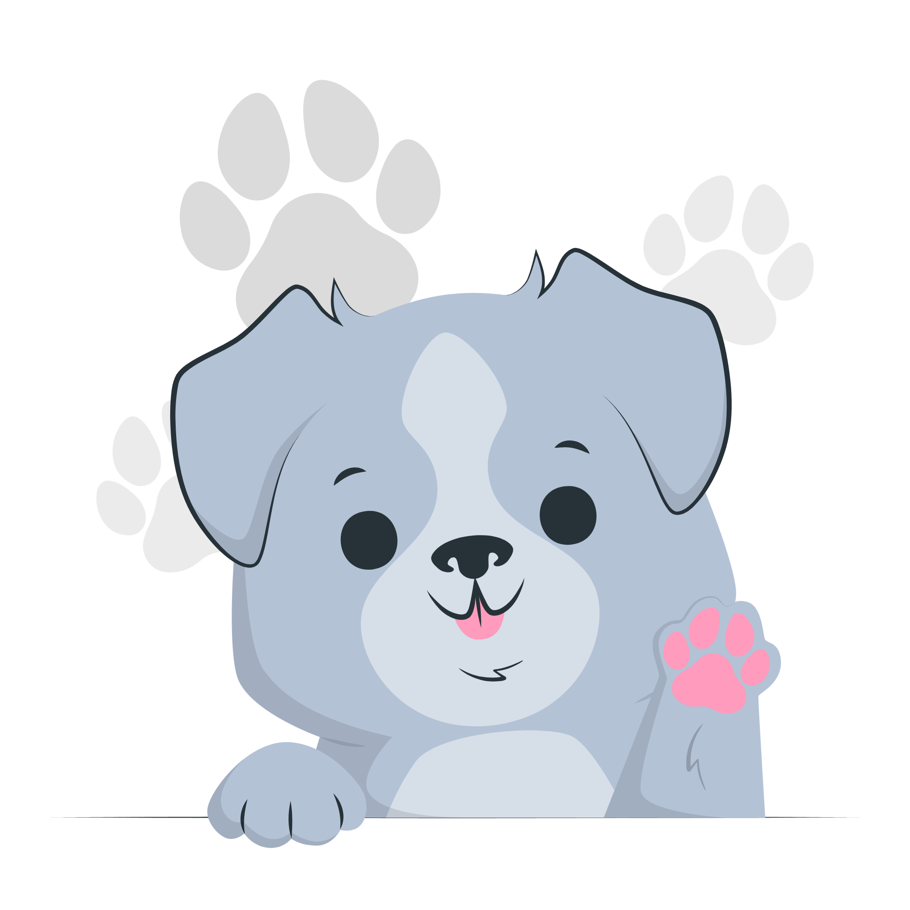
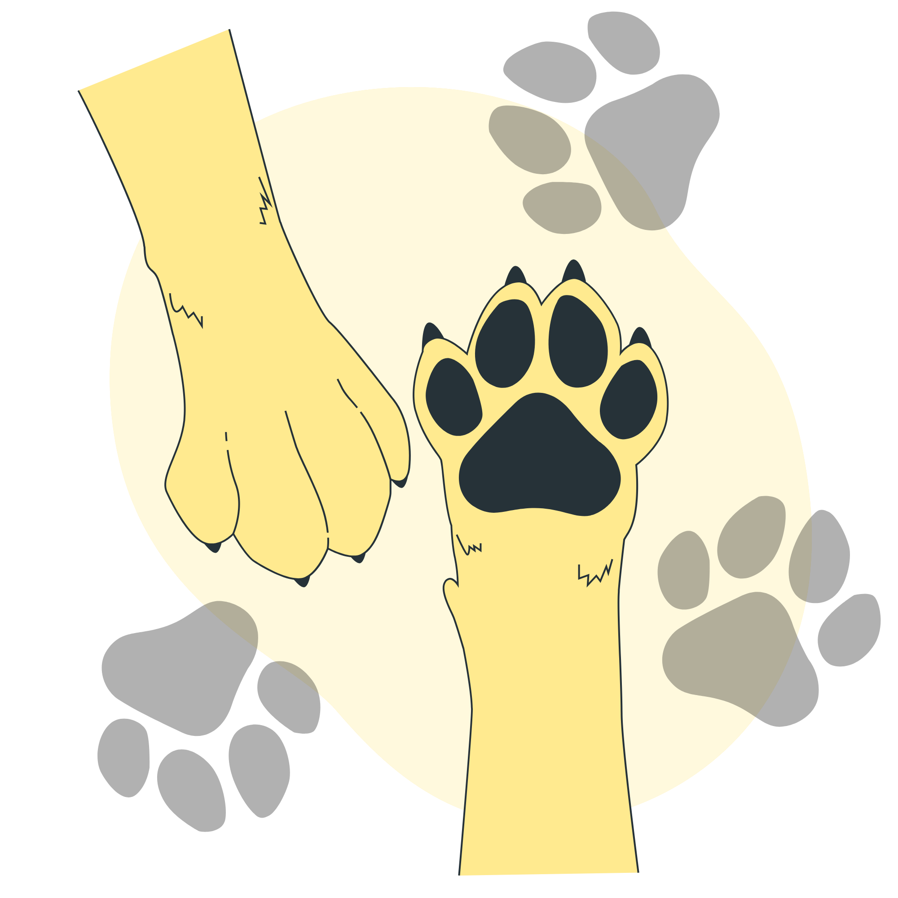
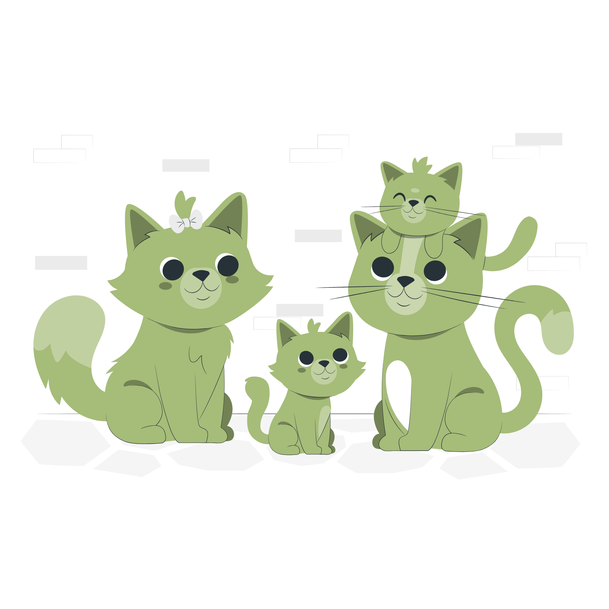

Adotar é
transformar
duas vidas.
Aqui, cada patinha tem uma história e todo amor encontra um lar.




Todos resgatados com amor
Cuidados veterinários em dia
Adoção responsável e acompanhamento
Você muda o destino de um animal
O que é ARCA?
O Projeto ARCA é uma iniciativa voltada à proteção e ao bem-estar de cães e gatos em situação de abandono. Nosso objetivo é incentivar a adoção responsável, promover a conscientização sobre cuidados com os animais e facilitar a conexão entre protetores, ONGs e futuros adotantes.
Através da plataforma, animais resgatados podem encontrar novos lares com mais facilidade, ajudando a transformar histórias de abandono em histórias de amor, cuidado e esperança.
Além da adoção, o projeto também busca conscientizar a população sobre a importância da castração e do combate aos maus-tratos, incentivando atitudes mais responsáveis e humanas em relação aos animais.
O ARCA acredita que a tecnologia pode ser uma grande aliada na causa animal, tornando o processo de adoção mais acessível, organizado e seguro para todos os envolvidos.